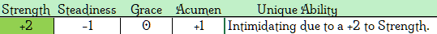

Typically found among the arid steppes, the mighty Minotaur is best known for pride in one’s own heritage and customs and for being one of the few beast men. They are tenacious fighters with a heightened sense of rightness and a willingness to put nothing above honor. With their impressively built physique, honed from generations in their less than hospitable environment, the sight of a Minotaur alone is enough to instill fear or, at the very least, command respect from other races.
Minotaurs are known for their Might Makes Right attitude. Few want to talk. Most are only interested in how to get what they want with the least amount of hitting, but still some hitting. Ranking was once for military only, but has since been brought into almost every social gathering. Even though Minotaurs have moved from brutish gangs to a military nation, many individuals have travelled out of the sovereign areas to lands unknown.
Baht:
Near criminal status. Baht are not
allowed to hide their new title under the threat of imprisonment. An example
of Baht would be an individual suspected of aiding and abetting a convicted criminal,
but limited evidence prevents their full conviction.
Cael:
Given to those whose families are known for the scholarly abilities.
The individual may not know much about the intellectual endeavors but someone in their family does.
Pive:
Given when the family line is recognized by the royal family.
These are written down in one of the many many decentralized libraries.
Ranks:
An individual may have multiple ranks based on membership
in multiple groups.
First:
The ‘First’ rank marks the highest honor
within a small group.
Second:
The ‘Second’ rank marks the person as a
likely right hand to the leader.
Third:
The ‘Third’ rank mark is (as expected)
just below the ‘Second’ rank.
Fourth:
The next in line after ‘Third’.
Fifth:
Last rank noted. All others are simply ‘Lutt’.
Lutt:
This title indicates a person in the military who is has been demoted to a position
less than ‘Fifth’.
Note that it is considered better to hold no rank rather than the Lutt rank.